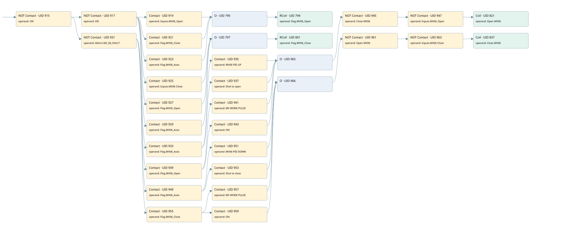

mv06 controlled by psh02
valve control loop · 검색 색인 순서 10 · 원본 내부 NID 추정 9
백업 PLF 원본의 2924860 바이트 위치에서 복원한 XML. 검색 문서 1711의 객체 키 161022008012000000000000와 연결했다. 이름 해석 29/29개. 남은 RefId는 상수 또는 미해석 참조다.
연결 구조 다시 그리기
원본 Part/PCon/Wire를 이용한 연결도다. TIA 화면의 래더 배치 또는 실행 결과를 재현한 그림은 아니다. 핀 연결은 아래 표와 원본 XML을 기준으로 읽는다. 노드 위에 마우스를 두면 피연산자 이름을 볼 수 있다.

접점·코일·블록과 피연산자
| Part UID | Gate | Negated 핀 | 연결 피연산자 |
|---|---|---|---|
| 915 | Contact | operand | operand = ON |
| 917 | Contact | operand | operand = ON |
| 919 | Contact | operand = Inputs.MV06_Open | |
| 921 | Contact | operand = Flag.MV06_Close | |
| 923 | Contact | operand = Flag.MV06_Auto | |
| 790 | O | ||
| 794 | RCoil | operand = Flag.MV06_Open | |
| 925 | Contact | operand = Inputs.MV06 Close | |
| 927 | Contact | operand = Flag.MV06_Open | |
| 929 | Contact | operand = Flag.MV06_Auto | |
| 797 | O | ||
| 801 | RCoil | operand = Flag.MV06_Close | |
| 931 | Contact | operand | operand = Allarm.MV_06_FAULT |
| 933 | Contact | operand = Flag.MV06_Auto | |
| 935 | Contact | operand = MV06 PID UP | |
| 937 | Contact | operand = Shot to open | |
| 939 | Contact | operand = Flag.MV06_Open | |
| 941 | Contact | operand = MV WORK PULSE | |
| 943 | Contact | operand = ON | |
| 965 | O | ||
| 945 | Contact | operand | operand = Close MV06 |
| 947 | Contact | operand | operand = Inputs.MV06_Open |
| 821 | Coil | operand = Open MV06 | |
| 949 | Contact | operand = Flag.MV06_Auto | |
| 951 | Contact | operand = MV06 PID DOWN | |
| 953 | Contact | operand = Shot to close | |
| 955 | Contact | operand = Flag.MV06_Close | |
| 957 | Contact | operand = MV WORK PULSE | |
| 959 | Contact | operand = ON | |
| 966 | O | ||
| 961 | Contact | operand | operand = Open MV06 |
| 963 | Contact | operand | operand = Inputs.MV06 Close |
| 837 | Coil | operand = Close MV06 |
접점 경로를 펼친 조건식
Contact·O/A·비교기의 원본 연결을 읽기 쉽게 펼친 보조 해석이다. POWER는 전원 레일 시작을 뜻한다. 호출 블록·에지·타이머의 내부 동작과 다중 쓰기 순서는 이 표로 실행 검증하지 않았다. 미해석 핀과 RefId는 원문 연결표에서 확인한다.
| UID | 동작 | 대상 | 원본 접점 경로 | 내용 |
|---|---|---|---|---|
| 794 | RCoil | Flag.MV06_Open | ((NOT [ON] AND Inputs.MV06_Open) OR (NOT [ON] AND Flag.MV06_Close) OR (NOT [ON] AND Flag.MV06_Auto)) | 조건 성립 시 Reset |
| 801 | RCoil | Flag.MV06_Close | ((NOT [ON] AND Inputs.MV06 Close) OR (NOT [ON] AND Flag.MV06_Open) OR (NOT [ON] AND Flag.MV06_Auto)) | 조건 성립 시 Reset |
| 821 | Coil | Open MV06 | ((((((NOT [ON] AND NOT [Allarm.MV_06_FAULT]) AND Flag.MV06_Auto) AND MV06 PID UP) OR (((NOT [ON] AND NOT [Allarm.MV_06_FAULT]) AND Flag.MV06_Auto) AND Shot to open) OR (((NOT [ON] AND NOT [Allarm.MV_06_FAULT]) AND Flag.MV06_Open) AND MV WORK PULSE) OR (((NOT [ON] AND NOT [Allarm.MV_06_FAULT]) AND Flag.MV06_Open) AND ON)) AND NOT [Close MV06]) AND NOT [Inputs.MV06_Open]) | 조건에 따른 Coil 기록 |
| 837 | Coil | Close MV06 | ((((((NOT [ON] AND NOT [Allarm.MV_06_FAULT]) AND Flag.MV06_Auto) AND MV06 PID DOWN) OR (((NOT [ON] AND NOT [Allarm.MV_06_FAULT]) AND Flag.MV06_Auto) AND Shot to close) OR (((NOT [ON] AND NOT [Allarm.MV_06_FAULT]) AND Flag.MV06_Close) AND MV WORK PULSE) OR (((NOT [ON] AND NOT [Allarm.MV_06_FAULT]) AND Flag.MV06_Close) AND ON)) AND NOT [Open MV06]) AND NOT [Inputs.MV06 Close]) | 조건에 따른 Coil 기록 |
원본 배선 연결
| Wire UID | 동일 Wire 연결 끝점 |
|---|---|
| 967 | Powerrail {} ↔ Part 915.in |
| 27 | ORef 28 (ON) ↔ Part 915.operand |
| 916 | Part 915.out ↔ Part 917.in ↔ Part 931.in |
| 21 | ORef 22 (ON) ↔ Part 917.operand |
| 918 | Part 917.out ↔ Part 919.in ↔ Part 921.in ↔ Part 923.in ↔ Part 925.in ↔ Part 927.in ↔ Part 929.in |
| 869 | ORef 840 (Inputs.MV06_Open) ↔ Part 919.operand |
| 67 | Part 919.out ↔ Part 790.in1 |
| 870 | ORef 841 (Flag.MV06_Close) ↔ Part 921.operand |
| 922 | Part 921.out ↔ Part 790.in2 |
| 871 | ORef 842 (Flag.MV06_Auto) ↔ Part 923.operand |
| 924 | Part 923.out ↔ Part 790.in3 |
| 71 | Part 790.out ↔ Part 794.in |
| 874 | ORef 843 (Flag.MV06_Open) ↔ Part 794.operand |
| 875 | ORef 844 (Inputs.MV06 Close) ↔ Part 925.operand |
| 70 | Part 925.out ↔ Part 797.in1 |
| 876 | ORef 845 (Flag.MV06_Open) ↔ Part 927.operand |
| 928 | Part 927.out ↔ Part 797.in2 |
| 877 | ORef 846 (Flag.MV06_Auto) ↔ Part 929.operand |
| 930 | Part 929.out ↔ Part 797.in3 |
| 72 | Part 797.out ↔ Part 801.in |
| 880 | ORef 847 (Flag.MV06_Close) ↔ Part 801.operand |
| 882 | ORef 848 (Allarm.MV_06_FAULT) ↔ Part 931.operand |
| 932 | Part 931.out ↔ Part 933.in ↔ Part 939.in ↔ Part 949.in ↔ Part 955.in |
| 883 | ORef 849 (Flag.MV06_Auto) ↔ Part 933.operand |
| 934 | Part 933.out ↔ Part 935.in ↔ Part 937.in |
| 884 | ORef 850 (MV06 PID UP) ↔ Part 935.operand |
| 936 | Part 935.out ↔ Part 965.in1 |
| 885 | ORef 851 (Shot to open) ↔ Part 937.operand |
| 938 | Part 937.out ↔ Part 965.in2 |
| 888 | ORef 852 (Flag.MV06_Open) ↔ Part 939.operand |
| 940 | Part 939.out ↔ Part 941.in ↔ Part 943.in |
| 889 | ORef 853 (MV WORK PULSE) ↔ Part 941.operand |
| 942 | Part 941.out ↔ Part 965.in3 |
| 890 | ORef 854 (ON) ↔ Part 943.operand |
| 944 | Part 943.out ↔ Part 965.in4 |
| 893 | Part 965.out ↔ Part 945.in |
| 894 | ORef 855 (Close MV06) ↔ Part 945.operand |
| 946 | Part 945.out ↔ Part 947.in |
| 895 | ORef 856 (Inputs.MV06_Open) ↔ Part 947.operand |
| 948 | Part 947.out ↔ Part 821.in |
| 897 | ORef 857 (Open MV06) ↔ Part 821.operand |
| 898 | ORef 858 (Flag.MV06_Auto) ↔ Part 949.operand |
| 950 | Part 949.out ↔ Part 951.in ↔ Part 953.in |
| 899 | ORef 859 (MV06 PID DOWN) ↔ Part 951.operand |
| 952 | Part 951.out ↔ Part 966.in1 |
| 900 | ORef 860 (Shot to close) ↔ Part 953.operand |
| 954 | Part 953.out ↔ Part 966.in2 |
| 903 | ORef 861 (Flag.MV06_Close) ↔ Part 955.operand |
| 956 | Part 955.out ↔ Part 957.in ↔ Part 959.in |
| 904 | ORef 862 (MV WORK PULSE) ↔ Part 957.operand |
| 958 | Part 957.out ↔ Part 966.in3 |
| 905 | ORef 863 (ON) ↔ Part 959.operand |
| 960 | Part 959.out ↔ Part 966.in4 |
| 908 | Part 966.out ↔ Part 961.in |
| 909 | ORef 864 (Open MV06) ↔ Part 961.operand |
| 962 | Part 961.out ↔ Part 963.in |
| 910 | ORef 865 (Inputs.MV06 Close) ↔ Part 963.operand |
| 964 | Part 963.out ↔ Part 837.in |
| 912 | ORef 866 (Close MV06) ↔ Part 837.operand |
식별자 해석 근거 29개
| ORef UID | RefId | 이름 | IdentXmlPart 파일 | 해석 방법 |
|---|---|---|---|---|
| 28 | 1 | ON | 0617-IdentXmlPart.xml | UID/RID + search-text + NID agreement |
| 22 | 1 | ON | 0617-IdentXmlPart.xml | UID/RID + search-text + NID agreement |
| 840 | 181 | Inputs.MV06_Open | 0619-IdentXmlPart.xml | UID/RID + search-text + NID agreement |
| 841 | 93 | Flag.MV06_Close | 0619-IdentXmlPart.xml | UID/RID + search-text + NID agreement |
| 842 | 81 | Flag.MV06_Auto | 0619-IdentXmlPart.xml | UID/RID + search-text + NID agreement |
| 843 | 94 | Flag.MV06_Open | 0619-IdentXmlPart.xml | UID/RID + search-text + NID agreement |
| 844 | 182 | Inputs.MV06 Close | 0619-IdentXmlPart.xml | UID/RID + search-text + NID agreement |
| 845 | 94 | Flag.MV06_Open | 0619-IdentXmlPart.xml | UID/RID + search-text + NID agreement |
| 846 | 81 | Flag.MV06_Auto | 0619-IdentXmlPart.xml | UID/RID + search-text + NID agreement |
| 847 | 93 | Flag.MV06_Close | 0619-IdentXmlPart.xml | UID/RID + search-text + NID agreement |
| 848 | 96 | Allarm.MV_06_FAULT | 0619-IdentXmlPart.xml | UID/RID + search-text + NID agreement |
| 849 | 81 | Flag.MV06_Auto | 0619-IdentXmlPart.xml | UID/RID + search-text + NID agreement |
| 850 | 80 | MV06 PID UP | 0617-IdentXmlPart.xml | UID/RID + search-text + NID agreement |
| 851 | 83 | Shot to open | 0617-IdentXmlPart.xml | UID/RID + search-text + NID agreement |
| 852 | 94 | Flag.MV06_Open | 0619-IdentXmlPart.xml | UID/RID + search-text + NID agreement |
| 853 | 13 | MV WORK PULSE | 0617-IdentXmlPart.xml | UID/RID + search-text + NID agreement |
| 854 | 1 | ON | 0617-IdentXmlPart.xml | UID/RID + search-text + NID agreement |
| 855 | 97 | Close MV06 | 0617-IdentXmlPart.xml | UID/RID + search-text + NID agreement |
| 856 | 181 | Inputs.MV06_Open | 0619-IdentXmlPart.xml | UID/RID + search-text + NID agreement |
| 857 | 98 | Open MV06 | 0617-IdentXmlPart.xml | UID/RID + search-text + NID agreement |
| 858 | 81 | Flag.MV06_Auto | 0619-IdentXmlPart.xml | UID/RID + search-text + NID agreement |
| 859 | 78 | MV06 PID DOWN | 0617-IdentXmlPart.xml | UID/RID + search-text + NID agreement |
| 860 | 82 | Shot to close | 0617-IdentXmlPart.xml | UID/RID + search-text + NID agreement |
| 861 | 93 | Flag.MV06_Close | 0619-IdentXmlPart.xml | UID/RID + search-text + NID agreement |
| 862 | 13 | MV WORK PULSE | 0617-IdentXmlPart.xml | UID/RID + search-text + NID agreement |
| 863 | 1 | ON | 0617-IdentXmlPart.xml | UID/RID + search-text + NID agreement |
| 864 | 98 | Open MV06 | 0617-IdentXmlPart.xml | UID/RID + search-text + NID agreement |
| 865 | 182 | Inputs.MV06 Close | 0619-IdentXmlPart.xml | UID/RID + search-text + NID agreement |
| 866 | 97 | Close MV06 | 0617-IdentXmlPart.xml | UID/RID + search-text + NID agreement |
검색 코드 보조 자료
참조 명칭을 찾기 위한 자료이며 실행 순서나 AND/OR 관계는 위 연결표로 확인한다.
"on" "on" "inputs".mv06_open "flag".mv06_open "allarm".mv_06_fault "flag".mv06_auto "mv06 pid up" "close mv06" "inputs".mv06_open "open mv06" "flag".mv06_open "mv work pulse" "on" "flag".mv06_auto "mv06 pid down" "open mv06" "inputs"."mv06 close" "close mv06" "shot to close" "flag".mv06_close "mv work pulse" "on" "shot to open" "flag".mv06_close "flag".mv06_auto "inputs"."mv06 close" "flag".mv06_close "flag".mv06_open "flag".mv06_auto